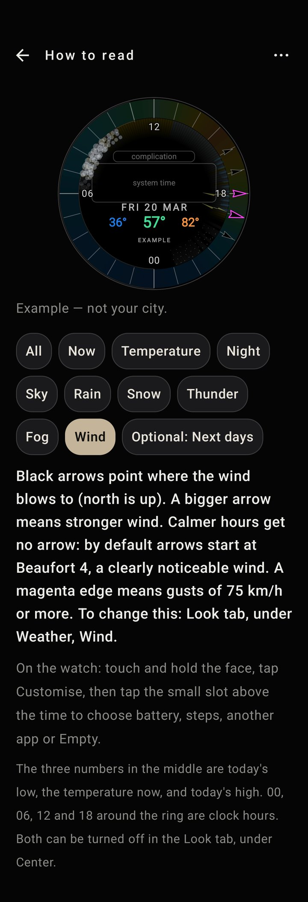
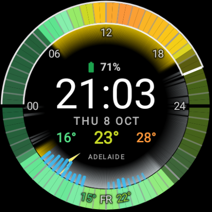
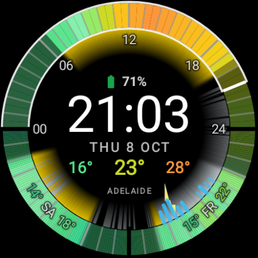
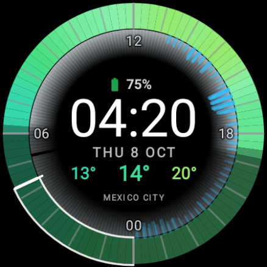
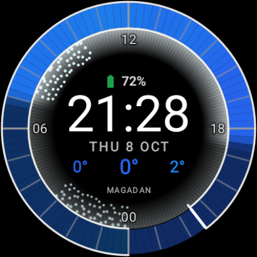
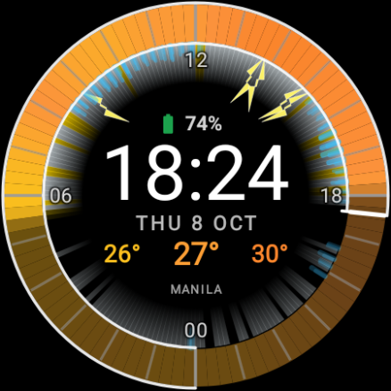
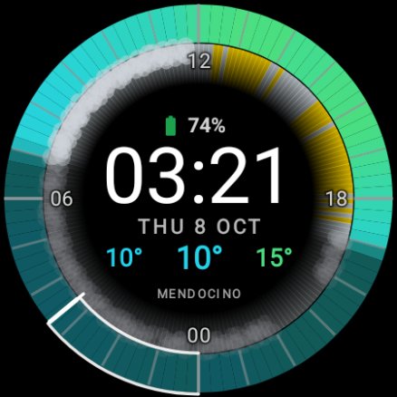
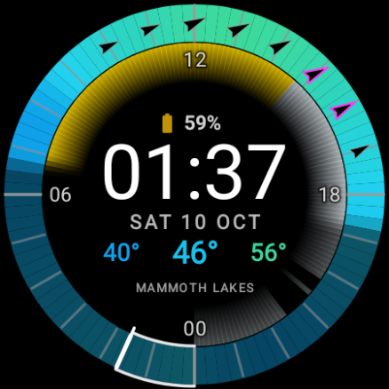

Guide
How to read the ring
The same example face as in the app. Tap a layer to isolate it.

Example — not your city.
The ring is one day, from midnight to midnight, with midnight at the bottom. Its color is the temperature. The hand shows the time now.
The three numbers in the middle are today’s low, the temperature now, and today’s high. 00, 06, 12 and 18 around the ring are clock hours. Both can be turned off in the Look tab, under Center.
On the watch: touch and hold the face, tap Customise, then tap the small slot above the time to choose battery, steps, another app or Empty.
Layer by layer
- The ring
- The ring is one day, from midnight to midnight. Midnight (00) is at the bottom, 06 on the left, noon (12) at the top and 18 on the right. Its color is the temperature. The hand shows the time now.
- Now
- The part from midnight to the hand is the time that has already passed today. The thin inner and outer lines show the same.
- Temperature
- Cool hours are blue or violet, warm hours orange or red. For colors that are easier to tell apart with color blindness: Look tab, under Display.
- Night
- The darker part is night. It lifts at sunrise (about 07) and returns at sunset (about 19). To make it lighter or darker: Look tab, under Sky, Night veil.
- Sky
- The glow inside the ring is the sky: gold for sun, pale for overcast. Patchy cloud mixes the two. Gold fades after sunset. To change or turn it off: Look tab, under Sky, Sky glow.
- Rain
- Streaks on that hour. Longer means more rain, gaps mean patchy rain. Settings: Look tab, under Weather, Rain.
- Snow
- Soft white ticks mean snow or ice, not rain. Settings: Look tab, under Weather, Snow.
- Thunder
- Bolts when thunder is in the forecast, even if the rain is light. Settings: Look tab, under Weather, Thunderstorm.
- Fog
- A milky band on the inside means fog or dense mist. Thicker means heavier. Settings: Look tab, under Weather, Fog.
- Wind
- Black arrows point where the wind blows to (north is up). A bigger arrow means stronger wind. Calmer hours get no arrow: by default arrows start at Beaufort 4, a clearly noticeable wind. A magenta edge means gusts of 75 km/h or more. To change this: Look tab, under Weather, Wind.
- The three numbers
- The three numbers in the middle are today’s low, the temperature now, and today’s high. 00, 06, 12 and 18 around the ring are clock hours. Both can be turned off in the Look tab, under Center.
New in 1.2
Wind arrows
Black arrows point where the wind blows to (north is up). A bigger arrow means stronger wind.
Calmer hours get no arrow: by default arrows start at Beaufort 4, a clearly noticeable wind.
A magenta edge means gusts of 75 km/h or more.
To change this: Look tab, under Weather, Wind. There you set Show from (the weakest wind that gets an arrow), Smallest arrow and Show gusts. Wind isn’t shown on the always-on screen.
See it in Mammoth Lakes, below.


Above the time
The slot above the time
Above the time sits a complication slot. By default it shows the watch battery.
- Green from 60%
- Yellow from 20 to 60%
- Red below 20%
Other complications use the clock colour. On the watch: touch and hold the face, tap Customise, then tap the small slot above the time to choose battery, steps, another app or Empty.
Optional
Next days
To see the coming days, turn on Next days in the Look tab. The bottom half of the ring then shows tomorrow, or the next two days. It’s off by default.
Today then fills the top half, from 00 on the left through 12 at the top to 24 on the right. Tomorrow starts on the right.
The two letters are the weekday in your phone’s language (for example MO, TU), with that day’s low and high beside them.
Each day has its own colors, rain, snow, fog, hour lines and night shading, so you read it the same way as today.
You can change all of this in the Look tab, under Next days: 1 or 2 days, which side tomorrow starts on, dividers, curved low and high, and the day label in the sky glow.


Real weather
What it looks like on the watch





Requires a round Wear OS 6+ watch.